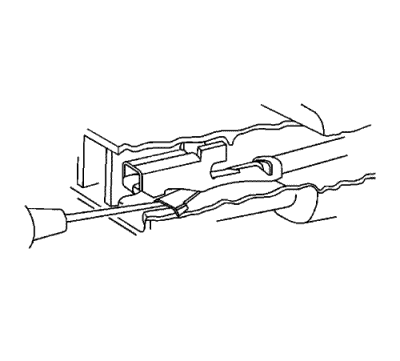

Conectores Delphi — Tirar para asentar
Herramientas especiales
Si desea informarse sobre herramientas regionales equivalentes, consultar Herramientas especiales .
Extracción de terminal
Si el terminal está visiblemente dañado o se sospecha que tiene una conexión defectuosa, debe sustituirse el terminal.

Siga el orden de los pasos indicado abajo para reparar conectores de tipo tirar para asentar.
- Extraiga el dispositivo de seguro de posición del conector (CPA) y/o el bloqueo secundario.
- Desconecte el conector del componente o separe los conectores para conectores en línea.
- Extraiga el dispositivo de seguro de posición del terminal (TPA).
- Introduzca la herramienta de desmontaje o agarre adecuada en la parte delantera del cuerpo del conector.
Nota: En conectores con más de un terminal, el pasador corredizo de servicio puede no ser suficientemente largo para extraer el terminal y engarzar en uno nuevo. Si el cable de terminal no tiene un pasador corredizo de servicio suficientemente largo, corte el cable 5 cm (2 pulg.) por detrás del conector antes de la retirada.
- Sujete el cable en la parte posterior del cuerpo del conector y empuje con cuidado el terminal hacia fuera de la parte delantera del cuerpo del conector.
Reparación de Terminales
- Si es necesario cortar el cable para extraer el terminal, empuje con cuidado una pequeña longitud de cable del mismo tamaño a través de la parte posterior de la cavidad del conector hasta que quede expuesto suficiente cable para engarzar un nuevo terminal. Si no se ha cortado el cable, corte el cable existente tan cerca del terminal antiguo como sea posible.
- Pele 5 mm (3/16 pulg.) de aislamiento del cable.
- Engarce un nuevo terminal en el cable.
- Suelde el engarce con soldadura de núcleo de resina.
Montaje de Terminales
- Alinee el terminal y tire del cable desde la parte posterior del conector para asentar el terminal.
- Si fuera necesario, corte el nuevo cable a la longitud adecuada y empálmelo con el circuito existente. Consultar Empalme de hilos de cobre usando casquillos de empalme .
- Si el conector está fuera del habitáculo, aplique grasa dieléctrica al conector.
- Monte el TPA, CPA y/o los bloqueos secundarios.
Reparación de cable con terminación
- Extraiga el terminal.
- Encuentre el cable con terminación adecuado.
- Utilice los casquillos de empalme adecuados en función del tamaño.
- Consultar Empalme de hilos de cobre usando casquillos de empalme .
| © Copyright Chevrolet Europe. All rights reserved |